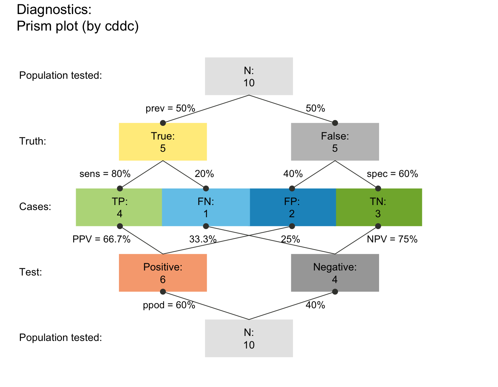
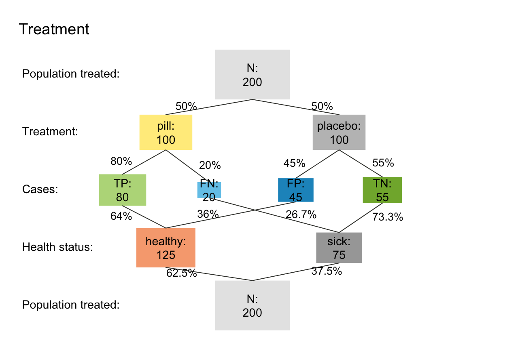
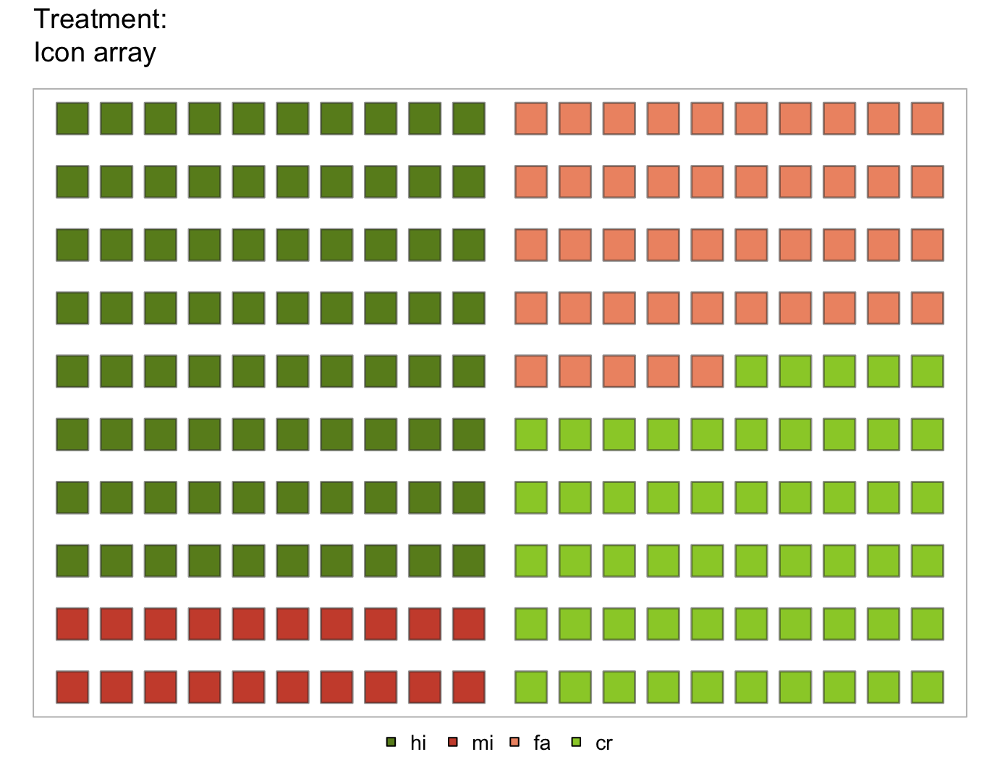
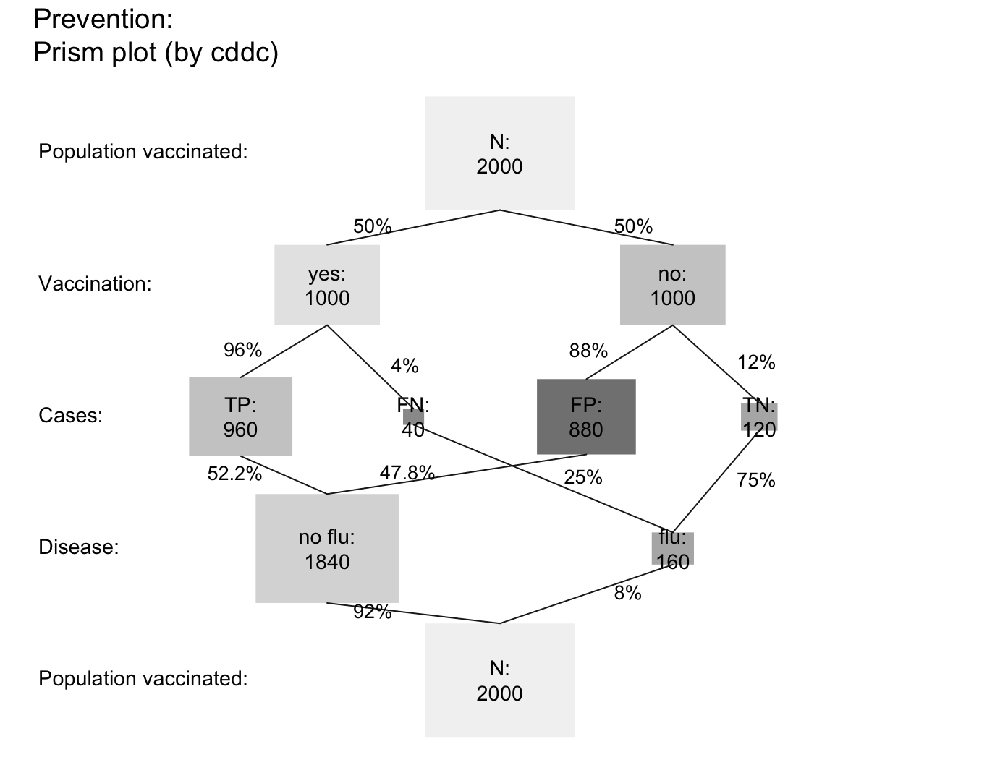

Read population data (from df) into a riskyr scenario (description).
Source:R/riskyr_sims.R
read_popu.Rdread_popu reads a data frame df
(containing observations of some population
that are cross-classified on two binary variables)
and returns a riskyr scenario
(i.e., a description of the data).
Usage
read_popu(
df = popu,
ix_by_top = 1,
ix_by_bot = 2,
ix_sdt = 3,
hi_lbl = txt$hi_lbl,
mi_lbl = txt$mi_lbl,
fa_lbl = txt$fa_lbl,
cr_lbl = txt$cr_lbl,
...
)Arguments
- df
A data frame providing a population
popuof individuals, which are identified on at least 2 binary variables and cross-classified into 4 cases in a 3rd variable. Default:df = popu(as data frame).- ix_by_top
Index of variable (column) providing the 1st (X/top) perspective (in df). Default:
ix_by_top = 1(1st column).- ix_by_bot
Index of variable (column) providing the 2nd (Y/bot) perspective (in df). Default:
ix_by_bot = 2(2nd column).- ix_sdt
Index of variable (column) providing a cross-classification into 4 cases (in df). Default:
ix_by_bot = 3(3rd column).- hi_lbl
Label of cases classified as hi (TP).
- mi_lbl
Label of cases classified as mi (FN).
- fa_lbl
Label of cases classified as fa (FP).
- cr_lbl
Label of cases classified as cr (TN).
- ...
Additional parameters (passed to
riskyr).
Details
Note that df needs to be structured (cross-classified)
according to the data frame popu,
created by comp_popu.
See also
comp_popu creates data (as df) from description (frequencies);
write_popu creates data (as df) from a riskyr scenario (description);
popu for data format;
riskyr initializes a riskyr scenario.
Other functions converting data/descriptions:
comp_popu(),
write_popu()
Examples
# Generating and interpreting different scenario types:
# (A) Diagnostic/screening scenario (using default labels): ------
popu_diag <- comp_popu(hi = 4, mi = 1, fa = 2, cr = 3)
# popu_diag
scen_diag <- read_popu(popu_diag, scen_lbl = "Diagnostics", popu_lbl = "Population tested")
plot(scen_diag, type = "prism", area = "no", f_lbl = "namnum")

# (B) Intervention/treatment scenario: ------
popu_treat <- comp_popu(hi = 80, mi = 20, fa = 45, cr = 55,
cond_lbl = "Treatment", cond_true_lbl = "pill", cond_false_lbl = "placebo",
dec_lbl = "Health status", dec_pos_lbl = "healthy", dec_neg_lbl = "sick")
# popu_treat
s_treat <- read_popu(popu_treat, scen_lbl = "Treatment", popu_lbl = "Population treated")
plot(s_treat, type = "prism", area = "sq", f_lbl = "namnum", p_lbl = "num")

plot(s_treat, type = "icon", lbl_txt = txt_org, col_pal = pal_org)

# (C) Prevention scenario (e.g., vaccination): ------
popu_vacc <- comp_popu(hi = 960, mi = 40, fa = 880, cr = 120,
cond_lbl = "Vaccination", cond_true_lbl = "yes", cond_false_lbl = "no",
dec_lbl = "Disease", dec_pos_lbl = "no flu", dec_neg_lbl = "flu")
# popu_vacc
s_vacc <- read_popu(popu_vacc, scen_lbl = "Vaccination effects", popu_lbl = "RCT population")
plot(s_vacc, type = "prism", area = "sq", f_lbl = "namnum", col_pal = pal_rgb, p_lbl = "num")
